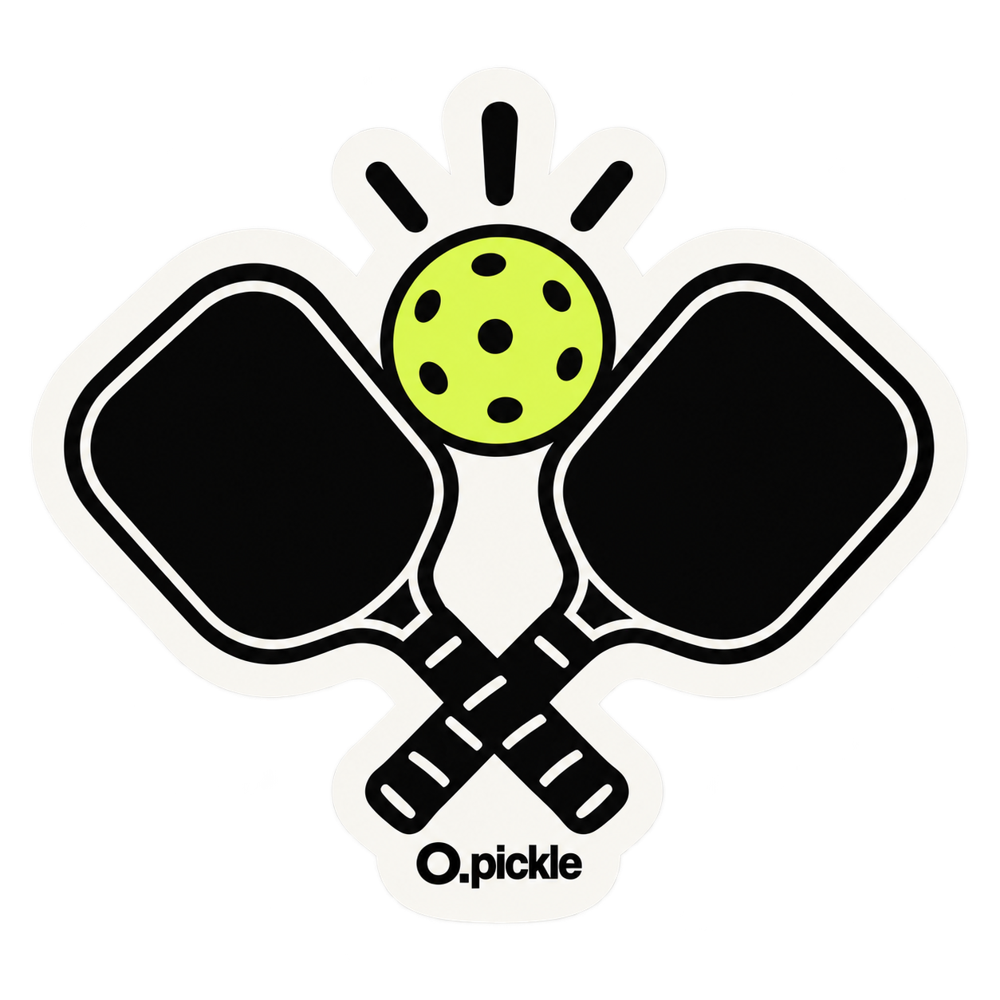

YOUR WELCOME GIFTPLAY. SNAP.
PLAY. SNAP.
MAKE IT YOURS.
今日の写真に、O.pickleらしいひとことを。
透過素材8点・ストーリーズ画像3点・スマホ壁紙2点。
友だち追加ありがとうございます！
Thanks for joining O.pickle. Pick your favourites and make them yours.
ZIPの展開は不要です。好きな画像の「LINEで受け取る」を押してください。
No ZIP needed. Choose an image and receive it in LINE.
スマホなら、LINEから保存。
- 好きな画像の「LINEで受け取る」を押す。
- LINEに戻ったら、入力済みのメッセージを送信。
- 届いた画像を開き、右下の保存アイコンを押す。
Androidはギャラリー／フォトの「LINE」を確認してください。表示名は端末により異なります。
Tap “LINEで受け取る”, send the prepared message, then open and save the returned image in LINE.
透明背景が必要な素材は「PNG原本」も利用できます。透過の扱いは保存方法・アプリにより異なります。
01 / PHOTO STICKERS
写真に、ひとこと。
02 / STORIES
今日のプレーを、ストーリーズに。
03 / WALLPAPERS
毎日、ちょっとピックル気分。
PC向け：まとめてZIPを受け取る
ZIPは写真アプリではなくダウンロード先に保存されます。展開操作が必要です。
PC用ZIPをダウンロードHOW TO USE
保存したら、好きな場面で。
ストーリーズ画像 → Instagramへの投稿用
- PNGを写真／ギャラリーに保存。
- Instagramでストーリーズを作り、保存した画像を選ぶ。
- 文章やメンションを加えて投稿。
「TODAY ON COURT」は写真用の空き枠があるテンプレートです。写真追加のステッカーから自分の写真を2枚選び、枠に重ねてサイズと位置を調整します。「ONE MORE GAME?」「GOOD GAME.」はそのまま投稿できます。
透過PNG → 自分の写真に重ねる素材
プレー写真をストーリーズの背景にし、写真追加のステッカーから保存したPNGを選んで重ねる使い方を想定しています。必要に応じて「切り抜き / Cutouts」を使用します。透明な背景を保つため、スクリーンショットではなく元のPNGを保存してください。
壁紙 → スマホの待ち受け用
iPhone：設定 → 壁紙 → 新しい壁紙を追加 → 写真。
Galaxy：設定 → 壁紙とスタイル → 壁紙を変更 → ギャラリー。
保存した壁紙を選び、時計やアイコンが見やすい位置に調整して設定します。
操作名やPNGの取り込み方は端末・アプリ版で異なります。壁紙は機種の縦横比に合わせて切り取られるため、設定前のプレビューで調整してください。